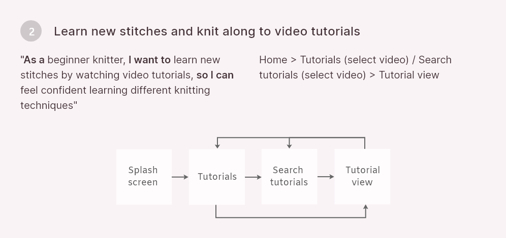

Knitcase
Knitting project, pattern and tutorial app
Concept app design
Jump to:
Overview
Role:
UI Designer
Context:
Knitcase was a personal project and native app design. Alongside my passion for knitting, inspiration for this project was born out of a frustration in not being able to find a user-friendly modern app for knitters.
Tools & resources:
Adobe XD, Marvel, Unsplash, Pexels, Personal images
Objective
Knitcase is a social and educational knitting platform that gives knitters the freedom to create, download and store knitting patterns and personal projects. The social element allows knitters to share and download each other’s patterns, as well as to showcase projects. The educational element allows users to learn new stitches and follow patterns via video tutorials.
Why knitting?
Owing to the increasing popularity of knitting and its growing digital presence, I wanted to design an app where knitters could do all of the above, all in one place.
Approach
Competitor Analysis
There were few good quality knitting apps on the market. I found three that corresponded with my objective: The Knitting App, Knitting Genius and LoveKnitting
View SWOT analysis hereBottom line
Overall, it appears that current apps lack appeal in terms of their overall UX and UI and either offer limited features (LoveKnitting and Knitting Genius) or offer too many (The Knitting App). Additionally, these apps either neglect any social aspect (LoveKnitting and Knitting Genius) or combine social with personal and educational aspects unsuccessfully (The Knitting App).
How Knitcase compares
Knitcase will be useful because it will combine only the necessary features of the personal, educational and social aspects of knitting. It will also allow users to contribute to the pattern library, providing a source for new patterns and greater variety. Knitcase will stand out with its entirely different aesthetic. The current apps’ interfaces either feel cluttered, immature or dated. The visual direction for Knitcase will be modern and sophisticated.
User Stories and Flows
Having narrowed down the aims of Knitcase and developed a better idea of the primary tasks users would need to complete, I was able to define user stories and their corresponding flows:



User flow diagram
Wireframing
Once I'd defined the flows, I started sketching out ideas for how the screens would look:


Mid-fidelity wireframes
From there, I narrowed down the best options and used Marvel prototyping tool to test the flows and navigation. This was really helpful as I could quickly see what screens or element were missing, before bringing them to life in Adobe XD.
Testing & Feedback
Round 1
Before progressing to high-fidelity screens, I made sure to receive feedback from peers and conducted two usability test sessions. Overall, the feedback highlighted that, although tasks seemed easy to complete, there was a lack of memorability and confidence and in having completed them correctly.It appeared I had added too many routes to complete the 'add new project' task.
In their place, I created a new route, which encompassed the former task and 'add new pattern' task, under one button on the bottom nav bar. This made the interface cleaner and removed the confusing and unnecessary ‘+’ button on Profile; it also made the tasks a lot quicker and easier to complete.
Changes


Visual Design
Logo development
Style guide
Testing & Feedback
Round 2
Now that I'd iterated upon my mid-fidelity wireframes and applied Knitcase's style guide to all screens, I could conduct another round of usability testing and feedback, using a more realistic, high-fidelity prototype. I conducted task-based moderated usability testing sessions with two participants, and received task-based unmoderated testing feedback from three other participants (five total).
Results synthesis
There was no consensus around design or flow errors. Each participant brought up different problems or made different suggestions. I catered for each appropriately, depending on the time and effort required to make the changes, whether the suggestion was necessary or added value in terms of ease and efficiency vs being a want, and whether the suggestion compromised other actions or visuals, e.g. added clutter.
Changes


Final screens


I also designed a native app version for Android: Click to view Android prototype
Reflection
What went well
Testing early & often
I made sure to conduct two rounds of testing to verify my design decisions. The earlier rounds of testing and feedback with my mid-fidelity prototypes proved beneficial, as the '+' bottom nav bar button that came out of this received an all-round positive response during the final round of testing and feedback. All participants used this route to complete the 'create new project' task.
Colour & spacing
I carried forward learnings from my previous projects and, this time, felt I was successful at using colour (using less of it and having variations of one main hue) and spacing (ensuring increments of 8px and letting elements breathe) more effectively.
Challenges and what I’d do differently
Test more Representative users
Although testing was extremely beneficial, only one of my participants represented my target user audience, i.e. they knitted. Because of this, there might have been a lack of confidence in navigating the app and completing tasks, which may have negatively affected usability test findings. For instance, a couple of participants voiced confusion about what 'patterns' were. Even though participants successfully completed tasks, this observation demonstrates the importance of testing the correct user group so a lack of confidence in this area doesn’t potentially impact results. Next time, I should account for this by allowing myself extra time to recruit more representative users.
Further development
Further development of Knitcase could surround designing the app from a business perspective. For instance, what it's Key Performace Indicators would be, how they'd inform business objectives, and how designs would be adapted to improve metrics. For example, Knitcase could be offered on a 'freemium' basis offering a selection of free patterns, with users having to upgrade to a premium plan to access all patterns. KPIs would include number of patterns saved and viewed, number of projects created and published, and number of accounts upgraded to premium.